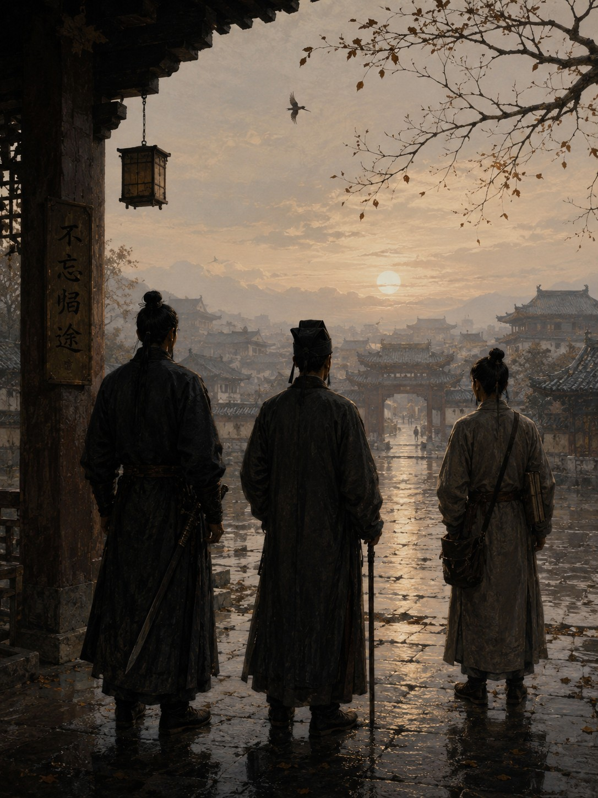

Дело о разлучении

Я всегда считал, что худшие известия приходят громко. К ним полагается стук в ворота среди ночи, крик стражников, срочный вызов в Управление или гонец на загнанной лошади. За годы службы я привык именно к таким бедам. Поэтому распоряжение, изменившее нашу жизнь, поначалу показалось мне совершенно безобидным.
Оно прибыло обычным утром вместе с пачкой других бумаг. Я слышал шелест плотной бумаги, хруст ломаемой печати и тихий вздох Цзяня, который разбирал почту. Потом он вложил мне в руку пластинку с одним словом.
«Повышение».
Помню, я даже усмехнулся. За последние месяцы мы раскрыли несколько трудных дел, заслужили похвалу начальства и, по общему мнению, были на хорошем счету. Повышение выглядело естественным. Но следом Цзянь дал мне вторую пластинку.
«Перевод».
Усмехаться я перестал. Меня назначали старшим следователем северного округа. Должность была почетной, жалованье вырастало почти вдвое, полномочия расширялись. Любой разумный человек назвал бы такое назначение удачей. Правда, разумные люди редко задерживаются в следователях надолго.
В тот же день свое распоряжение получил Ло. Столичная стража переводила его в особый отряд дворцовой охраны. Это тоже считалось продвижением, а для человека его происхождения было почти невероятной честью. Пока он читал бумагу вслух, я услышал, как его кулак ударил по столу.
Письмо для Цзяня пришло на следующий день. Главный архив приглашал его на должность младшего хранителя. Для немого писца это вершина службы, большинство архивистов ждут такого приглашения десятилетиями.
К вечеру мы сидели в нашем дворе и молчали. В такие часы я особенно остро чувствую свою слепоту. Я не видел ни лиц друзей, ни их жестов, ни глаз. Но за годы службы я научился многое понимать по звукам. Ло двигался резче обычного. Цзянь слишком долго возился с одной и той же пластинкой. Никто не хотел первым сказать очевидное.
Нас разделяли. Для этого не понадобилось ни ареста, ни ссылки, ни наказания, хватило награды, и в этом была своя красота. Каждый получил то, о чем когда-то мог только мечтать, каждый заслужил свое место, и потому отказаться было невозможно.
Через несколько дней я пошел в Палату Ритуалов оформлять перевод. Бумаги приготовили удивительно быстро, подозрительно быстро даже для человека, который всю жизнь имел дело с чиновниками. Молодой служащий любезно сообщил, что все печати уже поставлены. Обычно на это уходят месяцы. Нам хватило нескольких дней.
По дороге домой я впервые подумал, что опасными нас сделали вовсе не наши знания. Беда была в том, что мы слишком хорошо работали вместе. Следователь, который не видит, стражник, который не слышит, и писец, который не говорит, поодиночке выглядели странным набором увечных. Вместе мы становились чем-то гораздо более сильным. За последние годы я перестал замечать собственную неполноту. Если нужно было осмотреть место преступления, рядом был Ло. Если требовалось вспомнить старый документ, рядом был Цзянь. Услышать ложь в человеческом голосе было уже моей работой.
Только теперь я начал понимать, как сильно мы друг к другу привыкли.
Вечером накануне моего отъезда к нам пришел человек, которого никто не звал. Я узнал его по голосу, по тому самому спокойному голосу, который уже не раз возникал рядом с нашими расследованиями. Незнакомец остановился у ворот и некоторое время молчал.
— Красивое решение, — произнес он наконец.
Ло вскочил, я услышал скрип скамьи и быстрые шаги. Цзянь тоже поднялся, по обыкновению беззвучно.
— Какое решение? — спросил я.
— Разделить вас.
В его голосе слышалась почти печаль.
— Вы знаете, кто это сделал?
— Конечно.
— Тогда назовите имя.
Он тихо рассмеялся.
— Зачем?
— Мне интересно.
— Нет, господин следователь. Вам больно.
Я не нашелся что ответить. Некоторое время мы стояли молча. Потом незнакомец спросил:
— Вы помните песню про пташку?
Я кивнул.
— Тогда подумайте вот о чем. Почему в песне три дороги?
— Потому что она про Разделение.
— Нет, — сказал он совсем тихо. — Потому что одна дорога никогда не приводит домой.
После этого он ушел. Ло бросился следом и скоро вернулся. Он ничего не сказал, и я понял, что незнакомец опять исчез.
Ночь перед отъездом была самой тяжелой за многие годы. Никто из нас не спал. Мы просидели во дворе до рассвета. Ло время от времени обходил двор, словно надеялся найти угрозу, которую можно остановить мечом. Цзянь без конца перебирал свои записи. Я слушал ночной город и думал о том, что некоторые вещи предотвратить нельзя.
На рассвете во двор влетела птица, судя по шуму крыльев, совсем небольшая. Она села где-то под навесом и несколько раз коротко чирикнула. Я никогда не придавал значения таким мелочам, но в тот миг никто из нас не шевелился, и даже птица казалась частью происходящего. Потом она улетела.
Тогда Цзянь вложил мне в руку последнюю пластинку. На ней было вырезано:
«Не забывай дорогу домой».
Я несколько раз провел пальцами по знакам и убрал пластинку в рукав.
Впервые за многие годы нас разводили по разным службам, и мне было по-настоящему страшно. Меня пугали не заговоры, не древние тайны и не люди, следившие за нами из темноты. Я боялся того, что некоторые вещи можно разделить так аккуратно и законно, что никто и не заметит совершенного преступления.